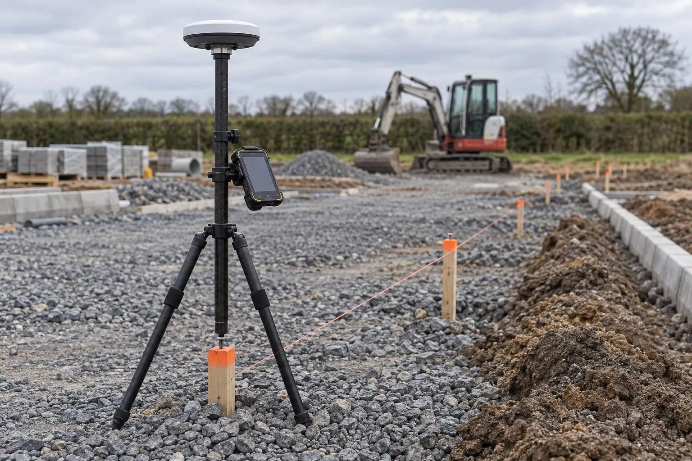

Road & sub-base level surveys
Sub-base and binder checked against the road design before the next layer goes on.
GNSS setting out
Pegs in the right place, at the right level, marked the way gangs work to them. We set out earthworks, drainage, roads and plots with an RTK GNSS rover, and set up site control on Ordnance Survey grid.

In short: we mark the design out on site with an RTK GNSS rover: control stations, earthworks limits, drainage runs and manholes, road and kerb offsets, plot dig pegs and level pegs. Typical accuracy is 10–20 mm in plan and 20–30 mm in level in open sky, checked against control every visit.
On a small job, a tape and a laser level are fine. As soon as the design is on coordinates, the site is open, or the drawing only works from a grid, GNSS is quicker and removes the build-up of errors that comes from measuring off the last thing built. Every point is set from the design coordinates independently, and checked against control.
We've spent years on the other side of the pegs, running groundworks gangs on housing sites. So pegs are offset where the machine won't knock them out, levels are written the way the gang reads them, and anything on the drawing that doesn't add up gets raised before it's built, not after.
RTK GNSS is excellent for earthworks, drainage, roads before final kerb checks, plots and landscaping. It isn't the tool for brickwork lines, holding-down bolts or anything with a few millimetres' tolerance; that's a total station job, and we'll tell you if what you're asking for needs one.
Need the pipes and ducts recorded before they're backfilled? See as-laid service surveys, often done on the same visit.
The setting-out drawing or design DWG, the grid or control, and the list of what you want marked.
We load the coordinates and check the drawing for anything that doesn't tie up before we arrive.
Check into control, set out and mark, then re-check control before we leave.
A short sheet of what was set out, with coordinates and levels, sent the same day.
We set out what the drawings show. Responsibility for the design, and for checking the setting-out drawing against the planning consent and boundaries, stays with the designer and the client. Legal boundaries need a solicitor or boundary specialist. Buried services need a utility survey before digging. And GNSS needs open sky, so points close to tall buildings or under trees are set from the nearest open control or with a total station.
See the setting out cost guide for prices.
Sub-base and binder checked against the road design before the next layer goes on.
Before-and-after scans that map the thickness actually laid, across the whole road.
Slab flatness, brickwork to drawing and drain collar positions, checked plot by plot.
Finished roads, kerbs, drainage covers and plots recorded, with as-built drawings in DWG and PDF.
Slabs and screeds scanned edge to edge and checked against SR1-SR3 or your flatness class.
Millimetre-accurate floor plans and elevations for kitchens, extensions and architects.
Levels, contours, boundaries, buildings and trees for planning and design, with the full 3D scan.
Groundworks and civils drawings reviewed before you dig, on any project: problems found on paper.
Levels, walls, steps, trees and drains surveyed for garden designers, landscapers and homeowners.
Aerial mapping tied to RTK GNSS control: scaled orthophotos, levels and contours for whole sites.
Every heap of stone, topsoil and spoil measured by drone, in cubic metres and tonnes.
Cut and fill against design or a previous survey, topsoil strip depths and muck-shift checks.
Monthly drone records of the whole site, compared with last month, for valuations and reports.
Drainage, chambers and ducts recorded in the open trench, with levels and photos, before backfill.
Roads, kerbs, walls and neighbouring buildings recorded by scan, drone and photo before work starts.
Close-up roof inspections without scaffold, with measured roof areas and pitches if needed.
Already have a scan or your engineer's levels? We process your data and report against design, no visit needed.
Setting out is marking the design on the ground so the work is built in the right place and at the right level. With an RTK GNSS rover, the design coordinates and levels are loaded into the controller and the rover guides us to each point, which is marked with a peg, pin or paint, with the level written on it or set on a profile.
Typically 10 to 20 mm in plan and 20 to 30 mm in level in open sky, checked against site control at the start and end of every visit. That's right for earthworks, drainage, roads and kerbs before final checking, plot dig pegs, fencing and landscaping. Setting out that needs millimetres, such as brickwork lines and holding-down bolts, should be done with a total station, and we'll say so if your job needs it.
Yes. We can establish control stations and benchmarks around a site, coordinated on Ordnance Survey National Grid with Ordnance Datum levels, or tie into an existing site grid from your engineer. You get a control sheet with coordinates, levels and witness photos, so anyone can use the stations later.
The setting-out drawing or, ideally, the design in DWG with coordinates and levels, the site grid or control details if one exists, and a clear list of what you want marked. If the drawings only show dimensions to buildings or boundaries, tell us and we'll work out the coordinates first.
GNSS needs a clear view of the sky. Close to tall buildings, under trees or inside structures, the signal is blocked or reflected and accuracy drops, so the rover can't be relied on there. In those spots we transfer control to the open area or recommend a total station.
Dimensure was set up by a groundworks project manager with 12 years on UK housing and civils sites, including SMSTS and a CSCS black card, so the setting out is done by someone who has run the gangs that work to the pegs. We mark things the way a groundworks foreman expects to find them.
Send the drawing, the location and when you need it. We reply the same working day with a fixed price.